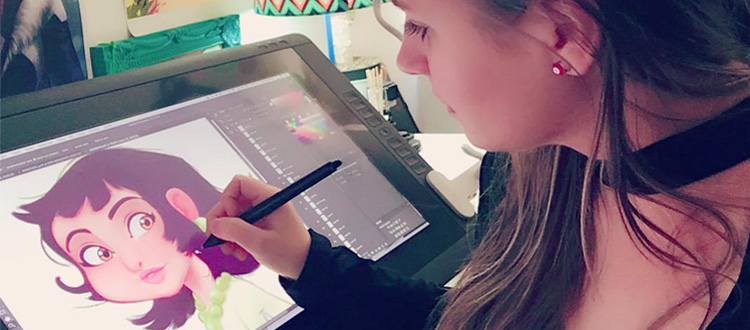
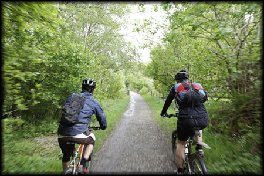

Ben has been drawing since he was very young. He draws nearly every day and what still primarily remains a side hobby is
very profitable when he opens for commissions once a year.
Several days in the week there are hours Ben is spending on videogames. It is a way for him to spend time with friends
no matter where they live.

Whether he is riding trails around the city or near the lake cabin, Ben enjoys getting time bicycling.